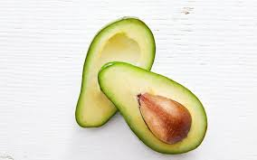
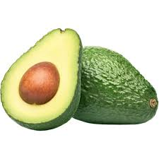
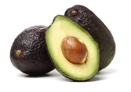

LAVOLAND - Love of Avocados
Discover the Avocados of Lavoland
At Lavoland, our land is home to three distinctive avocado varieties: Lamb Hass, Ettinger, and Fuerte. Each one has been selected for its unique qualities - from flavor and texture to seasonality and adaptability - allowing us to offer an orchard that is both diverse and intentional.
Ettinger - Early-season, mild & delicate

Size: Medium to Large
Weight: 250-400 grams
Shape: Elongated
Skin: Smooth, Thin, Glossy Green
Flavor: Mild, Delicate, Less Oily
Harvest Time: Early Season
Overview: Fresh and delicate, Ettinger is an early-season variety that brings lightness and valuable diversity to the orchard.
Fuerte - Classic, creamy & nutty

Size: Medium to Large
Weight: 200-350 grams
Shape: Pear Shape
Skin: Smooth, Thin, Green
Flavor: Rich, Creamy, Hint of Nuts
Harvest Time: Fall through Spring
Overview: Elegant and timeless, Fuerte is cherished for its smooth texture, rich flavor, and classic avocado character.
Lamb Hass - Rich, creamy & market-favorite

Size: Medium to Large
Weight: 200-300 grams
Shape: Round
Skin: Pebbly, Green to Purple-Black
Flavor: Creamy Texture, Rich Nutty Flavor
Harvest Time: Late Summer to Fall
Overview: Lamb Hass delivers a creamy, nutty indulgence with a premium flavor profile, prized for its rich taste and strong market appeal.